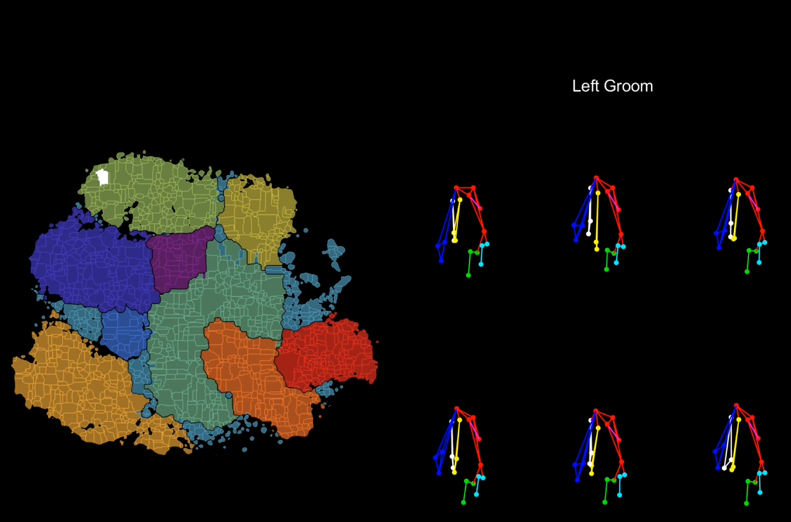

小鼠day4-聚类重新分析
day4 今天周日 白天去看了下奥本海默 回来歇了 晚上稍微分析一下之前的聚类问题
聚类算法 reanalyze
前文提到 分水岭算法主要是用于图像分割问题，那么问题就来了，之前认为他是在这篇文章中聚类的一个算法，那到底是怎么使用的呢？只能对这个算法做重新分析。
这里我们先看一下补充材料Video S7中的表现
这里试着添加了一下视频，如果不显示也没关系，这里用截图进行一下说明：

其实从图片来看，也不算特别难懂，这里分了很多个颜色的区域，排除掉外面可能离散的浅蓝色区域，剩下的都是被分割划分出来的各个区域，也就是类似分水岭算法中提到的“山谷”，每一个山谷就是分类出的一个结果，比如像图片展示的就是left groom这个动作，其他的区域就可能是left scratch、rearing等，总之分水岭算法在这里确实也就起到了一个划分边界的作用，也就是说，在引入分水岭算法之前，已经有工作把前面的一些相似的重复性动作放在靠近的地方，达到了类似聚类的效果，而分水岭算法只是把不同算法之间的轮廓变得更加明显，足以进行区分。
那么这个把相似的重复性动作放在一起的算法是什么呢？让我们回到原文再看一下。
We created behavioral maps by embedding behavioral feature vectors in two-dimensions using t-SNE (Berman et al., 2014; Maaten and Hinton, 2008). To create a co-embedding across all rats, we concatenated the feature matrix of frames in which animals were moving for 16 rats across 73 different behavioral conditions (1.04·109 frames). We subsampled this feature matrix at 1 Hz to create a feature vector comprising ~106 timepoints. Because t-SNE uses an adaptive similarity metric between points, when we created embeddings by uniformly sampling the data the embeddings were dominated by large regions when the animal was relatively still or adjusting its posture. We thus balanced the feature set (Berman et al., 2014) by performing k-means clustering on the full ~106 frame feature matrix using 8 clusters. We drew 30,000 samples from each cluster to create a 240,000 frame feature matrix that we embedded using a multi-core implementation of t-SNE. We found that adding further samples resulted in overcrowding of the t-SNE space (Kobak and Berens, 2019). We performed all t-SNE embedding using the Barnes-Hut approximation with ϴ=0.5 and the top 50 principal components of the feature matrix. For co-embeddings across rats, we used a perplexity of 200, which we found produced superior results for large feature sets. After creation of the embedding space, we re-embedded out-of-sample points in two steps. First, we found the 25 nearest neighbors to the out-of-sample point in the 140-dimensional feature space of whitened features. Next, we found the position of the first nearest neighbor in the embedding space. We took the position of the out-of-sample point as the median position of all the 25
nearest neighbors within a 3 unit radius of the closest nearest neighbor (Kobak and Berens, 2019).
To create behavioral clusters, we smoothed the behavioral map with a gaussian kernel of width 0.125, ~2 times the width of the spatial autocorrelation of the t-SNE map. We then clustered the data using a watershed transform (Berman et al., 2014). After clustering, two observers defined the kinematic criteria for assigning behavioral clusters into one of 12 coarse behavioral categories, such as walking, rearing, or grooming. The observers also established criteria for further assigning clusters to one of ~80 fine behavioral categories,
such as ‘low rear’, ‘high rear’, and ‘right head scratch’, that provided additional detail regarding the exact posture and kinematics of the animal. Each observer then watched 24 instances of each behavior selected at random from one animal and assigned each behavioral cluster into a coarse and fine behavioral category. Disagreements were resolved through discussion. Coarse behavioral boundaries drawn on the behavioral maps are hand drawn approximations to the occurrence of coarse behavioral labels in the dataset.
这一段是文中对于Behavior embedding，clustering的描述。可以看到的是他先建立了一个behavioral map，建立的时候是用T-SNE将行为特征向量嵌入到了二维的空间中，为了创建一个co-embedding的特征，这里把16个老鼠共73种不同行为的特征矩阵连接起来，从这之中进行抽样得到了包含约10^6个时间点的特征向量。然后考虑到T-SNE会使用点之间的自适应相似度测量，尤其是在平均的采样数据并嵌入时，它会很容易被一些大区域所主导，比如动物的相对静止的状态，因此这里使用了8个clusters对这10^6个帧进行了k-means聚类（我暂时理解的是聚成8类？），之后从每一类中抽取30000个samples，生成一个240000帧的feature matraix，用T-SNE的多核操作来嵌入，增加更多的样本会导致t-SNE空间过度拥挤，所以又使用了Barnes-Hut近似和特征矩阵的前50个主成分进行了所有t-SNE嵌入。后续列举的一些细节就完全看不懂了：在创建嵌入空间后，我们分两步重新嵌入样本外点。首先，我们在白化特征的140维特征空间中找到离样本外点最近的25个邻居。接下来，我们找到嵌入空间中第一个最近邻居的位置。我们将样本外点的位置作为最近邻3个单位半径内所有25个近邻的中位数位置(Kobak and Berens, 2019)。 第一步寻找最近的25个点还可以理解，之后选取做中位数的位置就没怎么理解，还需要后续去看。
后一段中，为了创建行为聚类（噢？这里感觉就是前面说的把相似的动作放在一起的操作），用宽度为0.125的高斯核平滑行为图，约为t-SNE图空间自相关宽度的2倍，然后用分水岭算法对数据进行聚类（看上去好像高斯核平滑也没有起到特别多的效果）
总结 目前看下来，感觉这里主要就分为两步，第一步是用了k-means做了一次聚类，之后从聚类结果中进行抽样，把抽样得到的特征用t-SNE来进行多核嵌入得到一个behavioral map，之后用高斯核平滑应该是让行为图变得更加清晰一点，方便后续的分水岭算法。那我认为后续需要关注的点应该是t-SNE算法在这里起到了什么作用？为什么选取了8 cluster的k-means聚类？这些问题需要明天再进行解决。